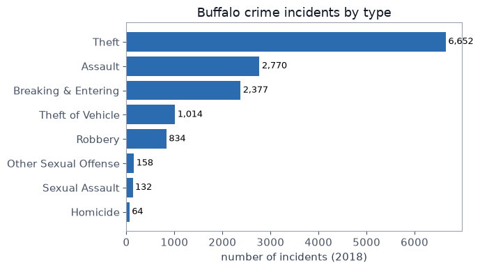
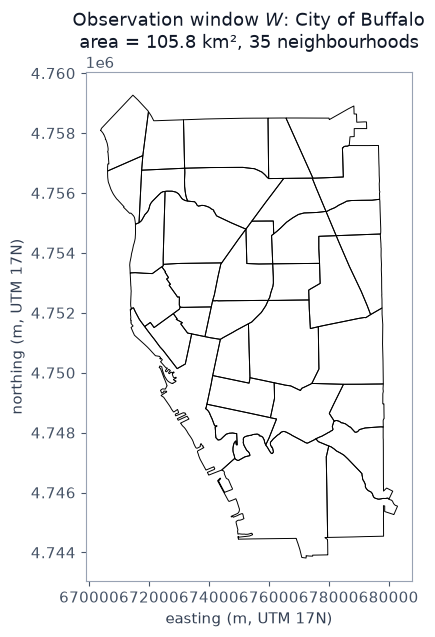
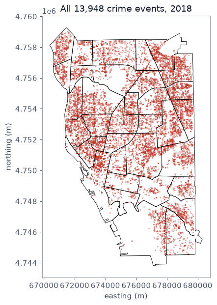
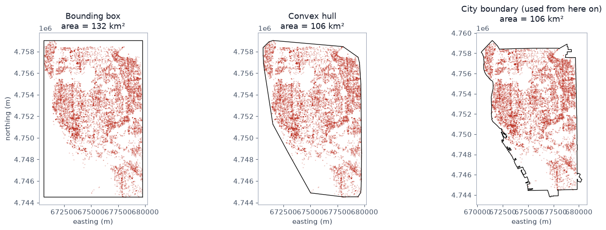

This folder is Part 1 of Module 04. The locations of events are the data: the question is why they fall here and not somewhere else. Five notebooks follow Buffalo crime incidents from 2018 (data/crime_data_2018.csv, data/buffalo_city.shp) from a raw point set to a test against chance.
Point Patterns Analysis. This notebook. Builds the event, the observation window, and the mark, and states complete spatial randomness.
First-order Analysis: Spatial Intensity. Maps how event density changes across the city with quadrat counts, kernel density, and relative-risk surfaces.
Second-order and Distance-based Summary Functions. Measures interaction between events: nearest-neighbour statistics, and Ripley’s K, L, and the pair correlation function.
Hypothesis Testing and Model Extensions. Runs Monte Carlo tests of complete spatial randomness, including the inhomogeneous K function and interaction between marked types.
Integration with Areal Analysis, Pitfalls and Exercises. Counts the events inside neighbourhoods, shows what that aggregation hides, and hands the result to Part 2.
Point pattern analysis is the statistical study of where events happen. Unlike the lattice data of Part 2 (one fixed value per county) or the geostatistical fields of Part 7 (a continuous quantity sampled at chosen locations), here the locations themselves are the random outcome. A crime location, a disease case, a tree in a forest plot: the question is not “what is the value here?” but “why are the events here and not somewhere else?”
This chapter builds the vocabulary and data structures that every later chapter in Part 1 relies on, using 14,001 crime incidents recorded in Buffalo, NY in 2018 as the running example.
Step
What we do
Concepts
Define events, marks, the observation window, and first- vs second-order structure
Theory
State complete spatial randomness (CSR) as the homogeneous Poisson process, and preview its clustered/regular alternatives
Data
Load the crime incidents and the city boundary; diagnose and fix a coordinate reference system (CRS) error in the source files
Window
Build the observation window from the city boundary
PointPattern
Attach the events to that window, with crime type as a mark
Duplicates
Detect and handle events that share a geocoded location
Comparison
Contrast the city-boundary window with a bounding box and a convex hull
CSR preview
Simulate a CSR pattern with the same count and window, and look at it next to the real data
By the end you will have a validated PointPattern object: reprojected, windowed, marked, and deduplicated: that the rest of Part 1 (intensity, second-order functions, hypothesis tests) builds on directly.
What is a Point Pattern?
Events, not measurements
A point pattern is a set of locations \(\{\mathbf{s}_1, \dots, \mathbf{s}_n\}\) in a region \(D \subset \mathbb{R}^2\), where the locations themselves were generated by some underlying process. Following convention, we call each location an event, to distinguish it from an arbitrary point of \(D\).
This is a different kind of randomness from the other two data types met in Part 0:
Data type
What is random
Example
Part
Geostatistical field
A value \(Z(\mathbf{s})\), sampled at chosen locations
PM2.5 at monitoring stations
7
Lattice (areal)
A value \(Z_i\) for each of a fixed set of regions
Diabetes prevalence by county
2-6
Point pattern
The locations \(\{\mathbf{s}_i\}\) themselves
Crime incidents, disease cases, trees
1
The observation window
A point pattern is only meaningful together with the region \(W \subset \mathbb{R}^2\) in which events were capable of being observed: the observation window. \(W\) is not optional bookkeeping: it is the denominator of every intensity estimate (\(n / |W|\)) and the domain over which every summary function integrates. Choosing it badly quietly changes every number that follows (Section 10 shows this directly).
Marks
An event can carry an attached attribute, called a mark: categorical (crime type, tree species) or numeric (magnitude, diameter at breast height). A pattern with marks is a marked point process; the marks add a further layer of structure: are events of type A found near events of type B? (Part 1.4).
First-order and second-order structure
Two questions organise the whole of Part 1:
First-order (intensity): how does the average density of events vary over \(D\)? This is a question about \(\lambda(\mathbf{s})\), the expected number of events per unit area at \(\mathbf{s}\) (Chapter 1.2).
Second-order (interaction):given the intensity, do events attract or repel each other at some spatial scale: beyond what the intensity alone predicts? This is a question about pairs of events (Chapter 1.3).
A pattern can have wildly non-constant intensity (more crime downtown) while still being “CSR-like” in its second-order structure once that intensity trend is accounted for (Chapter 1.4’s inhomogeneous K function): the two questions are logically separate, even though a raw map conflates them.
Point Processes and Complete Spatial Randomness
The formal model
A (spatial) point process is a random mechanism that produces a countable set of events in \(D\). It is characterised by its counting measure\(N(B)\) = the (random) number of events falling in a sub-region \(B \subseteq D\), and by its intensity function
The reference model against which every other pattern is judged is the homogeneous Poisson process:
\[
N(B) \sim \text{Poisson}\big(\lambda\,|B|\big) \quad \text{for every } B \subseteq W,
\]
with \(\lambda(\mathbf{s}) = \lambda\) constant, and counts in disjoint regions independent of each other. This is complete spatial randomness (CSR): no attraction, no repulsion, no drift in density. It plays the same role in point pattern analysis that the null of “no spatial autocorrelation” plays in Part 2.
Two variants appear in this package, matching two ways of conditioning on what is observed:
Conditional on \(N(W) = n\), a Poisson process is a binomial process: the \(n\) locations are independent and uniform over \(W\). This equivalence is exactly what licenses the conditional Monte Carlo tests of Chapter 1.4: simulate binomial-CSR patterns with the same \(n\) as the data, in the same window.
Beyond CSR: clustering and inhibition
Real patterns are rarely CSR. Two broad departures, both revisited with real code in Chapter 1.4:
Process
Mechanism
Effect at short range
Real-world analogue
Clustered (e.g. Neyman-Scott / Thomas)
Unobserved “parent” events each spawn a random number of “offspring” nearby
More near-neighbour pairs than CSR
Crime near hot addresses; disease around a source
CSR
Homogeneous Poisson
Baseline
Idealised background rate
Regular / inhibition (e.g. Matérn hard-core)
Events compete for space; no two closer than some minimum
Fewer near-neighbour pairs than CSR
Tree canopies competing for light; facility siting rules
The intuition to keep: clustering produces short inter-event distances more often than chance; inhibition produces them less often. Chapters 1.3-1.4 turn this intuition into estimators and tests.
Why the window and the population at risk matter
A raw count of crimes is not evidence of a “dangerous neighbourhood” on its own: crime, like most human activity, follows where people are. A rigorous analysis must eventually ask “more than expected given X?” (Chapter 1.2’s relative-risk surfaces, and the inhomogeneous K of Chapter 1.4) rather than treating the whole city as a uniform background. Keep this in mind throughout: intensity and clustering are properties relative to the window and the process generating exposure, not absolute facts about a place.
API overview
- Window, PointPattern, simulate_csr
Setup
Locate the repository root, import the spatial-statistics helpers, and point DATA at the example files.
Installation. This notebook needs installation option 3 (core, spatial analysis and spatial statistics): pip install "geolattice[statistics]". See “Installation options” in the GeoLattice README.
Code
import sysfrom pathlib import Pathimport numpy as npimport pandas as pdimport geopandas as gpdimport matplotlib.pyplot as pltfrom IPython.display import Markdown, displayROOT = Path.cwd().resolve()for candidate in [ROOT, *ROOT.parents]:if (candidate /"pyproject.toml").is_file() and (candidate /"Data").is_dir(): ROOT = candidatebreakelse:raiseFileNotFoundError("Could not find the GeoLattice repository root.")sys.path.insert(0, str(ROOT))DATA = ROOT /"Data"/"00_shared"/"data_spatial_stat"import geolattice.spatial_statisticsfrom geolattice.viz import apply_map_stylefrom geolattice.spatial_statistics.pointpattern import Window, PointPattern, simulate_csrapply_map_style()C = {"blue": "#2b6cb0", "red": "#c0392b", "green": "#2f855a", "orange": "#dd6b20","grey": "#718096", "purple": "#6b46c1", "teal": "#2c7a7b"}print(f"geolattice.spatial_statistics : version {geolattice.spatial_statistics.__version__}")print(f"geopandas : {gpd.__version__}")print(f"numpy : {np.__version__}")print(f"data folder : {DATA.relative_to(ROOT)}/")
geolattice.spatial_statistics : version 0.3.49
geopandas : 1.1.4
numpy : 2.4.6
data folder : Data/00_shared/data_spatial_stat/
Load and Explore the Buffalo Crime Data
The city of Buffalo, NY, publishes 14,001 geocoded crime incidents for 2018, each with an incident type, a reporting date, and a location. We use two files: crime_data_2018.csv (the incidents, with longitude and latitude) and buffalo_city.shp (35 official neighbourhood polygons, whose union we use as the study window).
print("Incident types (crime_data_2018.csv):")display(tbl["incident_type"].value_counts().rename("count").to_frame())print("\nDays of week covered:", sorted(tbl["day_of_week"].unique()))print(f"Missing coordinates : {tbl[['long', 'lat']].isna().any(axis=1).sum()}")fig, ax = plt.subplots(figsize=(7, 4))counts = tbl["incident_type"].value_counts()ax.barh(counts.index[::-1], counts.values[::-1], color=C["blue"])for i, v inenumerate(counts.values[::-1]): ax.text(v +50, i, f"{v:,}", va="center", fontsize=9)ax.set_xlabel("number of incidents (2018)")ax.set_title("Buffalo crime incidents by type")plt.tight_layout(); plt.show()
Incident types (crime_data_2018.csv):
count
incident_type
Theft
6652
Assault
2770
Breaking & Entering
2377
Theft of Vehicle
1014
Robbery
834
Other Sexual Offense
158
Sexual Assault
132
Homicide
64
Days of week covered: ['Friday', 'Monday', 'Saturday', 'Sunday', 'Thursday', 'Tuesday', 'Wednesday']
Missing coordinates : 0

A coordinate reference system problem
buffalo_city.shp (and the companion Crime_location_2018.shp) declare a coordinate reference system, EPSG:3718: NAD83(NSRS2007) / UTM zone 11N. That zone is defined for longitudes 114°W-120°W. Buffalo is at 78.9°W, thirty-eight degrees outside it. The transformation is still numerically computable, which is why nothing raises an error, but every distance and area derived from those “native” coordinates is wrong. (Part 0 §0.5 works through the full diagnosis: the scale factor formula, the measured area distortion, and the grid-rotation check.)
The crime_data_2018.csv table sidesteps the problem: it carries longitude/latitude (long, lat) as well, computed independently of the mis-declared shapefile. We reproject those to the correct UTM zone for Buffalo, EPSG:26917 (UTM 17N, NAD83), and use that projected, metric CRS for every distance-based calculation in Part 1. buffalo_city.shp is reprojected the safe way: through WGS84 longitude/latitude, not by trusting its own declared CRS.
Code
from pyproj import Transformer, CRSdeclared = CRS.from_user_input(city.crs)w, s, e, n = declared.area_of_use.boundsprint(f"buffalo_city.shp declares : {declared.name}")print(f" designed for longitudes : {w:.0f}\N{DEGREE SIGN} to {e:.0f}\N{DEGREE SIGN} "f"(Buffalo is at 78.9\N{DEGREE SIGN}W: outside this range)")CRS_CORRECT =26917# NAD83 / UTM zone 17N: the correct zone for Buffalo# City boundary: go through lon/lat, never trust the shapefile's own (wrong) CRS directlycity_fixed = city.to_crs(4326).to_crs(CRS_CORRECT)# Crime locations: build directly from the CSV's independent long/lat columnstransformer = Transformer.from_crs(4326, CRS_CORRECT, always_xy=True)x_m, y_m = transformer.transform(tbl["long"].to_numpy(), tbl["lat"].to_numpy())coords_all = np.column_stack([x_m, y_m])print(f"\nReprojected city area : {city_fixed.area.sum() /1e6:.1f} km²")print(f"City's own 'sqmiles' attr: {city['sqmiles'].sum() *2.589988:.1f} km² (independent check: matches)")print(f"Declared-CRS city area : {city.area.sum() /1e6:.1f} km² "f"({100* (city.area.sum() / city_fixed.area.sum() -1):+.1f}% error if used as-is)")
buffalo_city.shp declares : NAD83(NSRS2007) / UTM zone 11N
designed for longitudes : -120° to -114° (Buffalo is at 78.9°W: outside this range)
Reprojected city area : 105.8 km²
City's own 'sqmiles' attr: 105.8 km² (independent check: matches)
Declared-CRS city area : 133.1 km² (+25.7% error if used as-is)
From here on, every notebook in Part 1 uses coords_all (built from long/lat via EPSG:26917) and city_fixed (the city boundary reprojected the same way). This is the single most important data-hygiene step for Part 1: every distance, area, intensity and K-function in the chapters that follow depends on it.
Building the Observation Window
Window.from_gdf takes the union of every polygon in a GeoDataFrame as \(W\). Using the official city boundary
rather than, say, the bounding box of the crime points: means the window reflects genuine city limits: lakes, industrial land and the areas outside city limits are excluded from the denominator of every intensity estimate.
Code
win_city = Window.from_gdf(city_fixed)print(win_city)print(f"\nis a simple rectangle : {win_city.is_rectangle}")print(f"bounding box (m) : {tuple(round(b) for b in win_city.bounds)}")print(f"short side : {win_city.short_side /1000:.2f} km ""(sets the default distance range for later K/L/pair-correlation plots)")fig, ax = plt.subplots(figsize=(6.5, 6.5))city_fixed.boundary.plot(ax=ax, color="k", lw=0.7)ax.set_aspect("equal")ax.set_title(f"Observation window $W$: City of Buffalo\narea = {win_city.area /1e6:.1f} km², "f"{len(city_fixed)} neighbourhoods")ax.set_xlabel("easting (m, UTM 17N)"); ax.set_ylabel("northing (m, UTM 17N)")plt.tight_layout(); plt.show()
Window(polygon, area=1.0583e+08, bounds=(670377.394, 4743812.67, 680296.782, 4759265.808))
is a simple rectangle : False
bounding box (m) : (670377, 4743813, 680297, 4759266)
short side : 9.92 km (sets the default distance range for later K/L/pair-correlation plots)

Constructing the Point Pattern
PointPattern(coords, window=..., clip=True) attaches the event coordinates to the window; clip=True drops any event that falls outside \(W\) rather than raising (a handful of geocoded points fall just outside city limits, or across the river, and are not part of “crime in Buffalo”).
PointPattern(n=13948, intensity=0.0001318, window=Window(polygon, area=1.0583e+08, bounds=(670377.394, 4743812.67, 680296.782, 4759265.808)))
events supplied : 14,001
events inside W : 13,948
dropped by clip : 53 (0.38%, outside city limits)
average intensity : 131.80 events / km² (0.000132 events / m²)

Marks: Crime Type as a Categorical Mark
Passing marks= attaches the incident type to each event. by_mark() extracts the sub-pattern of one type as its own PointPattern: useful for the cross-type interaction questions of Chapter 1.4 (are thefts and assaults found near each other, more than chance would predict?).
Even at a glance, Theft (n ≈ 6,600) looks broadly spread with denser pockets, while Homicide (n = 64) is too sparse to say much about visually: small marks require the formal tools of later chapters (and, for genuinely rare events, the small-area methods of Part 5) rather than a map alone.
Duplicate Locations
Geocoded administrative data routinely produce exact duplicate coordinates: several incidents recorded at the same street address, snapped to the same address point by the geocoder. Distance-based statistics (nearest- neighbour distances, Chapter 1.3’s K/L/pair-correlation functions) are sensitive to this: a duplicate creates an inter-event distance of exactly zero, which is a data artefact, not evidence of point-process clustering.
Code
n_dup = pp_all.n_duplicatesprint(f"total events : {pp_all.n:,}")print(f"events sharing a location : {n_dup:,} ({100* n_dup / pp_all.n:.1f}%)")print(f"distinct locations : {pp_all.n - n_dup:,}")pp_dedup = pp_all.deduplicate()pp_jitter = pp_all.jitter(scale=5.0, seed=1) # +/- 5 m, well under city-block scaleprint(f"\nafter deduplicate() : n = {pp_dedup.n:,} (keeps first occurrence only)")print(f"after jitter(5 m) : n = {pp_jitter.n:,} (keeps every event, displaces ±5 m)")print(f"jitter duplicates remaining: {pp_jitter.n_duplicates}")
total events : 13,948
events sharing a location : 5,045 (36.2%)
distinct locations : 8,903
after deduplicate() : n = 8,903 (keeps first occurrence only)
after jitter(5 m) : n = 13,948 (keeps every event, displaces ±5 m)
jitter duplicates remaining: 0
Two legitimate responses, and they are not interchangeable:
deduplicate() treats repeated coordinates as one location: appropriate when the question is about where events occur (e.g. the K-function analyses of Chapter 1.3, which assume distinct events).
jitter() keeps every recorded event but displaces coincident ones by a small random amount: appropriate when the count matters (e.g. a quadrat or kernel-intensity estimate in Chapter 1.2, where each incident should still contribute to the density).
Chapter 1.3 uses deduplicate(); Chapter 1.2’s intensity and quadrat methods use the full, non-deduplicated pattern, since they count events rather than measure distances between them. Exercise 3 of Chapter 1.5 asks you to quantify how much this choice changes the answer.
Alternative Windows: Bounding Box, Convex Hull, City Boundary
The window is a modelling choice, not a given. Three common options, compared on the same data:
Code
win_bbox = Window.from_points(pp_all.coords)win_hull = Window.convex_hull(pp_all.coords)# win_city already built in Section 6windows = {"Bounding box": win_bbox, "Convex hull": win_hull, "City boundary (used from here on)": win_city}rows = []for name, w in windows.items(): rows.append({"window": name, "area (km²)": w.area /1e6,"implied intensity (events/km²)": pp_all.n / (w.area /1e6)})win_table = pd.DataFrame(rows).set_index("window")win_table.round(2)
area (km²)
implied intensity (events/km²)
window
Bounding box
131.91
105.73
Convex hull
105.63
132.05
City boundary (used from here on)
105.83
131.80
Code
fig, axes = plt.subplots(1, 3, figsize=(15, 5.2))for ax, (name, w) inzip(axes, windows.items()): geoms =getattr(w.polygon, "geoms", [w.polygon])for g in geoms: xg, yg = g.exterior.xy ax.plot(xg, yg, color="k", lw=1) ax.scatter(pp_all.coords[:, 0], pp_all.coords[:, 1], s=0.5, alpha=0.25, color=C["red"]) ax.set_aspect("equal") ax.set_title(f"{name}\narea = {w.area /1e6:.0f} km²") ax.set_xlabel("easting (m)")axes[0].set_ylabel("northing (m)")plt.tight_layout(); plt.show()ratio = win_bbox.area / win_city.areahull_leak = win_hull.polygon.difference(win_city.polygon).areahull_miss = win_city.polygon.difference(win_hull.polygon).areadisplay(Markdown(f"The bounding box is **{ratio:.2f}× larger** than the true city area, because Buffalo's boundary is ""irregular and the Niagara River frontage is not rectangular. Using it as the window would understate the ""true intensity by the same factor, and would let edge-correction routines in Chapter 1.3 search for ""neighbours across areas (open water, other municipalities) where events could never have been recorded.\n\n"f"The convex hull has almost the *same total area* as the city boundary ({win_hull.area /1e6:.1f} vs "f"{win_city.area /1e6:.1f} km²): but that similarity is misleading: its straight edges cut across "f"the city's concave river frontage and **leak {hull_leak /1e6:.1f} km² outside city limits**, while "f"simultaneously missing {hull_miss /1e6:.1f} km² of genuine city area that happens to have no crime ""points right at its edge. The two errors partly cancel in the *total*, but not in *where* the window is ""wrong: a reminder that matching areas is not the same as matching shapes.\n\n""**The city boundary is the only one of the three that matches how the data were actually generated**, ""which is why Section 6 used it and every later chapter in Part 1 does too."))

The bounding box is 1.25× larger than the true city area, because Buffalo’s boundary is irregular and the Niagara River frontage is not rectangular. Using it as the window would understate the true intensity by the same factor, and would let edge-correction routines in Chapter 1.3 search for neighbours across areas (open water, other municipalities) where events could never have been recorded.
The convex hull has almost the same total area as the city boundary (105.6 vs 105.8 km²): but that similarity is misleading: its straight edges cut across the city’s concave river frontage and leak 3.9 km² outside city limits, while simultaneously missing 4.1 km² of genuine city area that happens to have no crime points right at its edge. The two errors partly cancel in the total, but not in where the window is wrong: a reminder that matching areas is not the same as matching shapes.
The city boundary is the only one of the three that matches how the data were actually generated, which is why Section 6 used it and every later chapter in Part 1 does too.
A First Look at Randomness
To build intuition before the formal tests of Chapter 1.4, simulate_csr draws a complete-spatial-randomness pattern with exactly the observed count \(n\), uniformly distributed over the same window \(W\) (the binomial process of Section 3.2). Placing it next to the real data is a first, informal check.
The two maps look nothing alike: the simulated CSR pattern is uniformly smudged across the city, while the real data show visible denser pockets and emptier stretches. That impression is exactly what intensity estimation (Chapter 1.2) and the formal CSR tests of Chapter 1.4 make precise and quantify: a picture is a hypothesis, not a result.
Summary and Conclusions
This chapter built the foundations that the rest of Part 1 relies on.
What we did
Distinguished point pattern data (random locations) from the lattice and geostatistical data of other Parts.
Defined events, the observation window \(W\), marks, and the first-order/second-order distinction.
Stated complete spatial randomness as the homogeneous Poisson process, and previewed clustered and regular alternatives.
Loaded the 2018 Buffalo crime data and diagnosed a coordinate reference system error in the source shapefiles (declared UTM zone 11N; Buffalo is in zone 17N): fixed by reprojecting through longitude/latitude to EPSG:26917.
Built the observation window from the official city boundary, and the marked PointPattern from the corrected coordinates, with clip=True handling the handful of out-of-window points.
Quantified duplicate geocoded locations (about a third of all events) and demonstrated deduplicate() versus jitter() as two different, non-interchangeable responses.
Compared the city boundary against a bounding box and a convex hull, and showed the bounding box overstates the window area by a large factor.
Simulated a CSR pattern with the same count and window as a first, informal benchmark.
Practical takeaways
Always audit the CRS before computing anything spatial. A shapefile can declare a valid CRS that is still wrong for the data it contains, and nothing will raise an error.
The window is part of the model, not an afterthought. Use the region that actually could have produced the data, not a computational convenience like a bounding box.
Duplicates need a decision, not an assumption. Whether to deduplicate or jitter depends on whether the question is about locations or counts.
clip=True on PointPattern is the right default for real-world data with a few stray points near a boundary; the alternative (raising an error) is better when out-of-window points signal a genuine data bug.
Next steps
Chapter 1.2 (First-order Analysis: Spatial Intensity) takes the pp_all pattern built here and asks how the intensity \(\lambda(\mathbf{s})\) varies across the city: quadrat counts, kernel density estimation, and relative-risk surfaces that compare one crime type against the rest.
Further reading
Textbooks
Reference
Notes
Baddeley, A., Rubak, E. & Turner, R. (2015). Spatial Point Patterns: Methodology and Applications with R. CRC Press.
The standard modern reference; companion to the spatstat R package
Diggle, P. J. (2013). Statistical Analysis of Spatial and Spatio-Temporal Point Patterns (3rd ed.). CRC Press.
Concise, classic treatment; CSR and its alternatives
Illian, J., Penttinen, A., Stoyan, H. & Stoyan, D. (2008). Statistical Analysis and Modelling of Spatial Point Patterns. Wiley.
Comprehensive; strong on point process theory
Cressie, N. (1993). Statistics for Spatial Data. Wiley.
Chapter 8 covers point processes alongside the other two data types
Key papers
Paper
Contribution
Ripley, B. D. (1977). Modelling spatial patterns. Journal of the Royal Statistical Society B, 39, 172-212.
Foundational paper introducing second-order methods (Chapter 1.3)
Neyman, J. & Scott, E. L. (1958). Statistical approach to problems of cosmology. JRSS B, 20, 1-43.
Origin of the parent-offspring cluster process used in Chapter 1.4
Matérn, B. (1960). Spatial Variation. Meddelanden från Statens Skogsforskningsinstitut.
Origin of the hard-core inhibition process used in Chapter 1.4